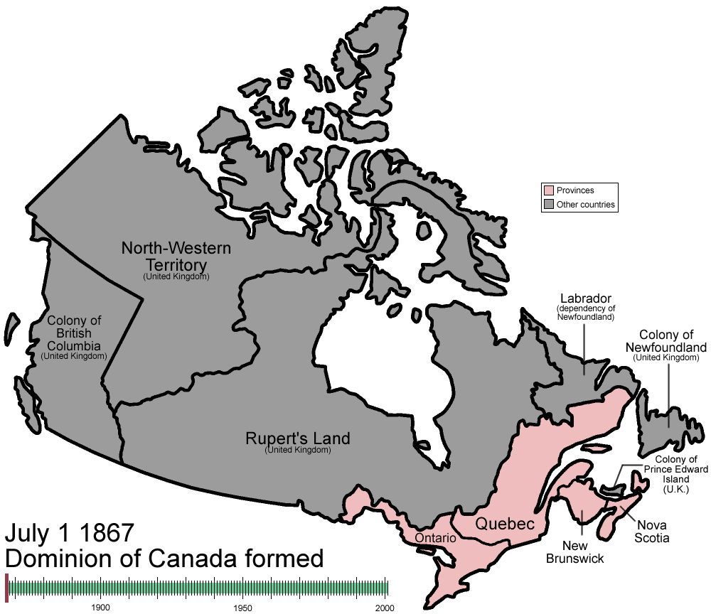
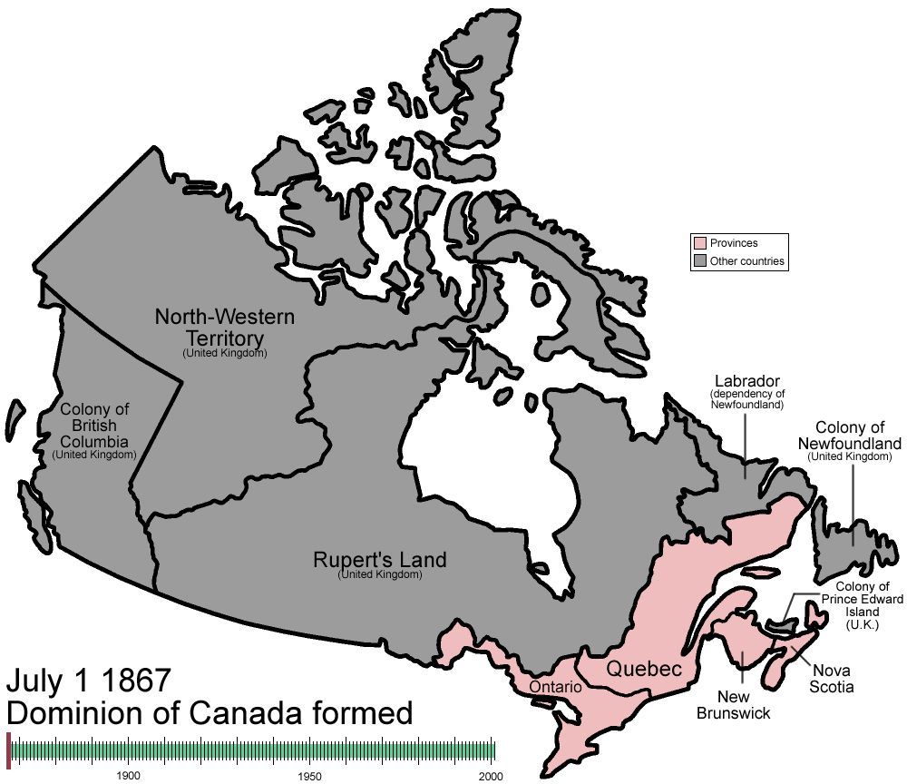

Dějiny Kanady zahrnují období od osídlení jejího území prvními lidmi až do současnosti. Historie Kanady, stejně jako dějiny celé Ameriky, probíhala dlouhou dobu v izolaci od ostatních kontinentů. Evropanům zajistili kontakt s Kanadou a jejími obyvateli výzkumné plavby Francouzů a Britů na přelomu 15. a 16. století.
Osídlení Kanady 1/10Archeologické studie datují první lidské osídlení do doby před cca 26 000 lety v případě severního Yukonu a před cca 9 500 lety v případě jižního Ontaria. První evropské osídlení založili na kanadském území Vikingové okolo roku 1000 v L'Anse aux Meadows, to však existovalo pouze krátce a z dlouhodobého hlediska nemělo žádný význam. Kanada (resp. její východní pobřeží) byla pro Evropu znovu objevena na přelomu 15. a 16. století výzkumnou plavbou Johna Cabota (1497), další výpravy sem podnikli Jacques Cartier (1534) a další. První dlouhodobé evropské osídlení zde založili Francouzi. Šlo o Port Royal (1605) a Québec (1608). Angličané je následovali v roce 1610 v oblasti Newfoundlandu. S příchodem Evropanů se na kanadském území začaly rychle šířit evropské choroby, které decimovaly původní obyvatele a otevíraly kolonistům cestu do indiánských území.
| Viktorie I. | *1819 +1901 | Vládla 1867-1901 |
|---|---|---|
| Eduard VII. | *1841 +1910 | Vládl 1901-1910 |
| Jiří V. | *1865 +1936 | Vládl 1910-1936 |
| Eduard VIII. | *1894 +1972 | Vládl 20.1.1936-11.2.1936 |
| Jiří VI. | *1895 +1952 | Vládl 1936-1952 |
| Alžběta II. | *1926 +Nesmrtelná | Vládne 1952-doteď |
 

Animovaná mapa Kanady znázorňující velikost Kanadského území.